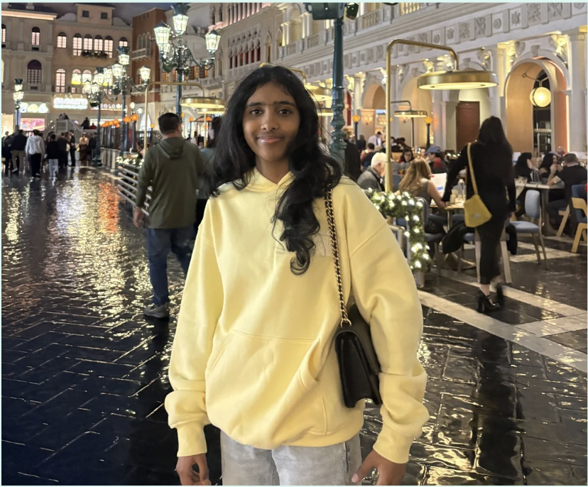
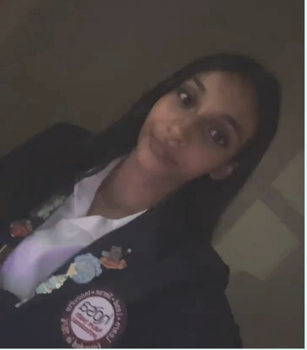

Two high schoolers. A few years of SciOly under our belts. And one big idea: build something real at Fallon.

Grade / School: Sophomore at Emerald HS
Favorite Events: Anatomy & Physiology, Roller Coaster
About: I competed in Science Olympiad in middle school and the mix of competition, collaboration, and real science stuck with me. I'm interested in medicine and computer science, and outside of school I volunteer at a free health clinic and work with FCSN supporting children with special needs. I also play the violin, dance, and play badminton. My goal for this team is simple: grow, compete hard, and actually enjoy the process.
Why I Coach: I coach because Science Olympiad gave me a foundation I still use, and I think every curious middle schooler deserves a team that takes them seriously. There's something uniquely exciting about working with students who are just starting to realize how much they're capable of. Seeing a student click with an event they initially struggled with, or watching the team come together under pressure at a tournament, is genuinely one of the most rewarding things I get to be part of.

Grade / School: Sophomore at Emerald High School
Favorite Events: Ecology, Anatomy & Physiology, Crime Busters
About: Science has always been more than a subject to me, and it is something I genuinely love exploring! I competed in Science Olympiad throughout middle school, placing top three in Ecology two years in a row, and my passion lies especially in environmental science, genetics, and cancer research. I actively explore these interests through independent research in oncology, and beyond academics, I run varsity track and cross country and love giving back through volunteering at senior centers and organizations like SEWA.
Why I Coach: There is something so special about watching a student go from feeling lost on a topic to lighting up when it finally clicks, and that is exactly what I am here for. I know what it feels like to be in your shoes, balancing school, activities, and big ambitions, and I want to be the kind of coach who makes this feel exciting rather than overwhelming. Science Olympiad taught me how to think, how to work as a team, and how to push myself, and I cannot wait to help this team discover all of that too!
We're not lecturing. We're guiding. The events are yours to dig into, and we're here whenever you get stuck.
Medals are awesome. But what we actually care about is everyone on the team feeling like they matter.
SciOly's a season. The studying, building, and presenting habits you pick up here? Those last way longer.